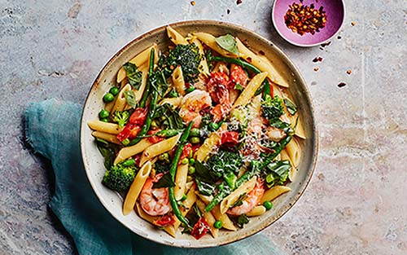
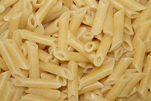
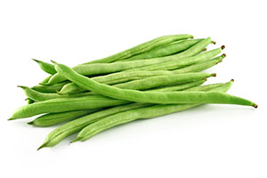
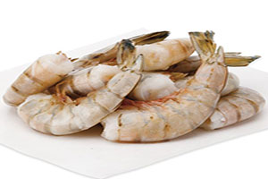
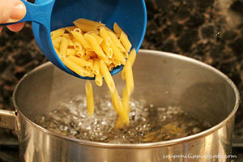
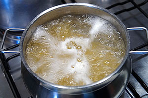
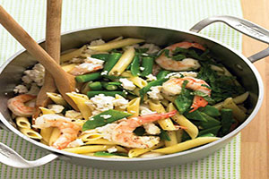

One-Pot Pasta Primavera with Shrimp

Ingredients
- 12 ounces short pasta, such as penne or fusilli

- 4 garlic cloves, thinly sliced
- 2 1/2 teaspoons(or more) kosher salt
- 3/4 teaspoon(or more) freshly ground black pepper
- 1(10 ounce) bag frozen broccoli florets
- 6 ounces green beans, preferably haricots verts, trimmed

- 1 pint cherry tomatoes, sliced in half
- 1 cup frozen green peas
- 3 tablespoons unsalted butter
- 1 teaspon finely grated lemon zest
- 3/4 cup finely grated Parmesan, plus more for serving
- 8 ounces large shrimp, peeled, deveined, tails left on

- 1/4 cup coarsely chopped basil
- red pepper flakes(for serving;optional)
Directions
- Place pasta in a lage, wide-bottomed pot or large, wide, straight-sided pan.

- Add garlic, salt, black pepper, and 3 1/2 cups hot water. Cover and bring to a boil.

- Once boiling, uncover and cook, setting a timer for cooking pasta according to package directions and stirring often.
- When 5 minutes remain on timer, stir in broccoli and green beans.
- Cover pot and return to a boil. (If pot starts to dry out at any point, add another 1/2 cup water.)
- When 2 minutes remain on timer, stir in shrimp, tomatoes, peas, and butter.
- Cover and continue to cook 2 minutes, then uncover and cook, stirring, until pasta is tender, shrimp are cooked through, and water is almost completely evaporated, about 1 minute more.
- Remove from heat.
- Stir in lemon zest and 3/4 cup Parmesan and toss to coat. Season with more salt and pepper, if needed.

- Divide pasta among plates. Top with basil, additional Parmesan, and red pepper, if using.